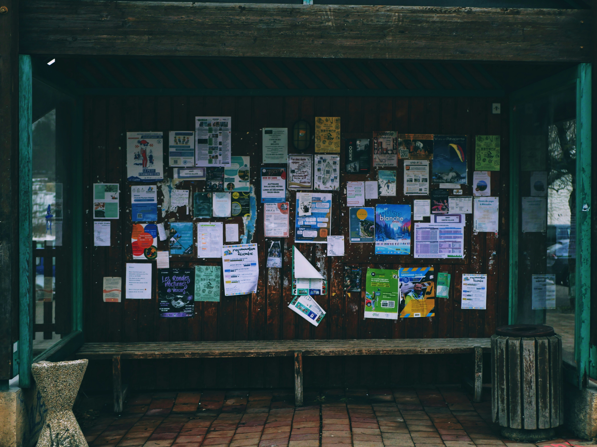
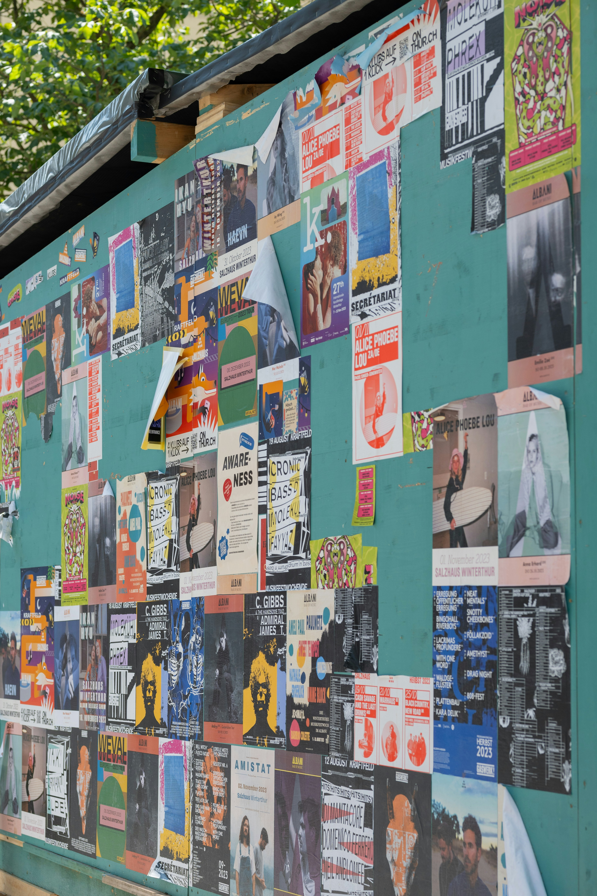

L2-L3 · Flow and Positioned Relationships
A Snapshot of the People Around It

The thing I like about community boards is that they are rarely polished. They are usually a mix of whatever the people around them decided was worth sharing.
There might be a lost-pet flyer next to an advertisement for guitar lessons. Someone is selling a desk. Someone else is promoting a local event. There could be a volunteer opportunity, a club meeting, a room for rent, or a handwritten note with tear-off phone numbers along the bottom.
None of it necessarily belongs together. That is kind of the point.
Taken together, those notices can tell you something about the people who use that space. A college bulletin board will probably look different from one inside an apartment complex. A coffee shop board may look completely different from one at a community center.
Researchers Karen Fisher, Carol Landry, and Charles Naumer use the term “information grounds” to describe social settings where people exchange everyday information while they are primarily there for another reason. In a 2007 study, they examined these interactions among college students in public spaces on and around a university campus.
A community bulletin board works in a similar way. People usually are not entering a building specifically to read the board. The information simply happens to be sitting directly in their path.
A community bulletin board is basically a neighborhood conversation happening on paper.
Finding Something You Were Not Looking For
Online information is convenient, but it often depends on knowing where to look. You might need to join the right group, follow the right account, open a specific email, or type the right words into a search bar.
A physical bulletin board asks much less of you. You can walk past it and notice something by accident.
Earlier research on information grounds describes how ordinary social spaces can create opportunities for spontaneous and unexpected information sharing when people come together for another purpose.
The bulletin board itself is not creating those relationships. It is just one small part of the environment. But it gives people a place to leave information behind for whoever happens to come next.
L4-L5 · Layers, Shapes, and Fallback
The Design Actually Matters

There is also a design problem happening on every bulletin board. When twenty pieces of paper are competing for attention, nobody is going to carefully study all twenty. A flyer has to make sense quickly.
A clear heading, readable text, enough contrast, and useful spacing can make a difference. The World Wide Web Consortium's Web Accessibility Initiative recommends similar principles for digital information, including sufficient contrast and using headings and spacing to make content easier to identify and understand.
Those ideas make sense on paper too. If the date is tiny, the heading is difficult to find, or the text is crammed into every available inch of the page, the information may technically be there without being particularly useful.
Placement matters for the same reason. A great flyer does not help much if it is buried underneath five newer ones.
That makes each notice its own small communication problem: What is this? Who is it for? When is it happening? What does someone need to do next?
Still Useful, Just Differently
Community bulletin boards are not going to replace social media, email, or websites. They do not need to.
Someone puts up a flyer because they want another person in that space to see it. Maybe somebody takes a picture of it. Maybe they tear off a phone number. Maybe they find out about something they never would have searched for on their own.
Printed community notices have not disappeared either. Tempe Public Library, for example, maintains a formal policy governing printed materials that may be posted, displayed, or distributed inside the library.
That does not mean bulletin boards are better than digital communication. It just means physical notices still have a place alongside it.
But sometimes that is exactly why they work.